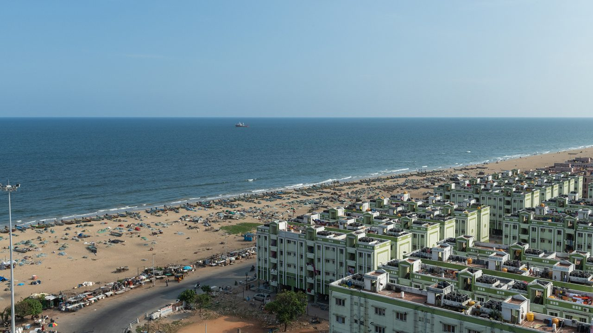
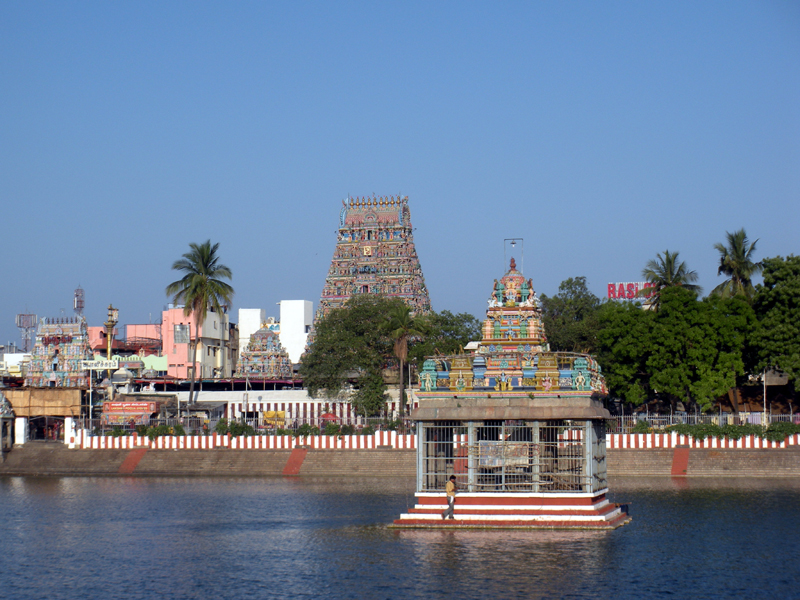

Top Places to Visit in Chennai

Marina Beach
One of the longest urban beaches in the world, perfect for evening strolls and sunrise views.

Kapaleeshwarar Temple
A historic Dravidian-style temple dedicated to Lord Shiva, known for its intricate carvings and religious significance.
Fort St. George
Built by the British in 1644, this fort now houses a museum showcasing colonial history and artifacts.